Install the tools, then start the backend, the web dashboard and the phone app, and set up a patch. Written for people with little or no development experience.
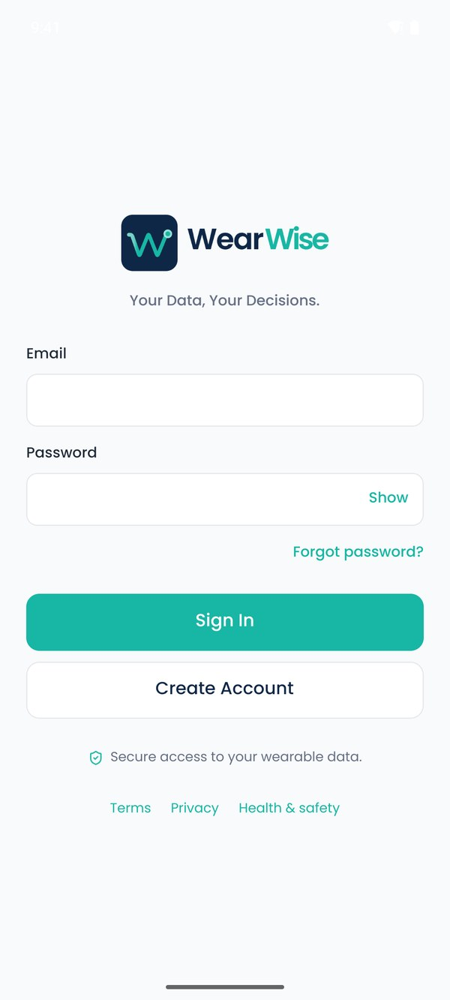
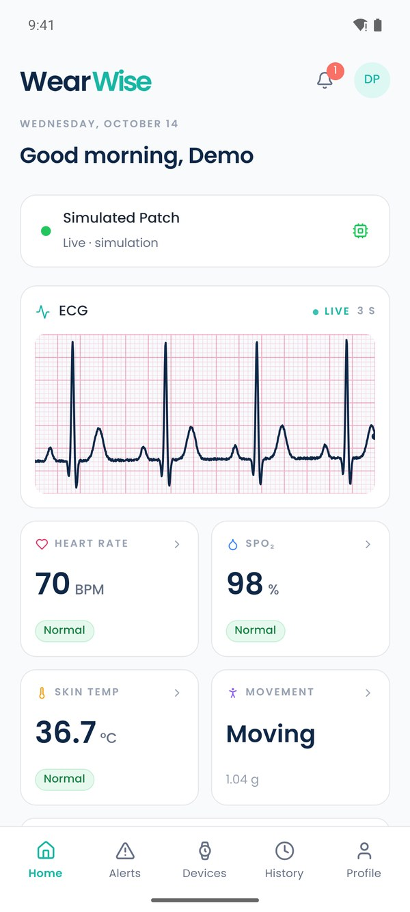
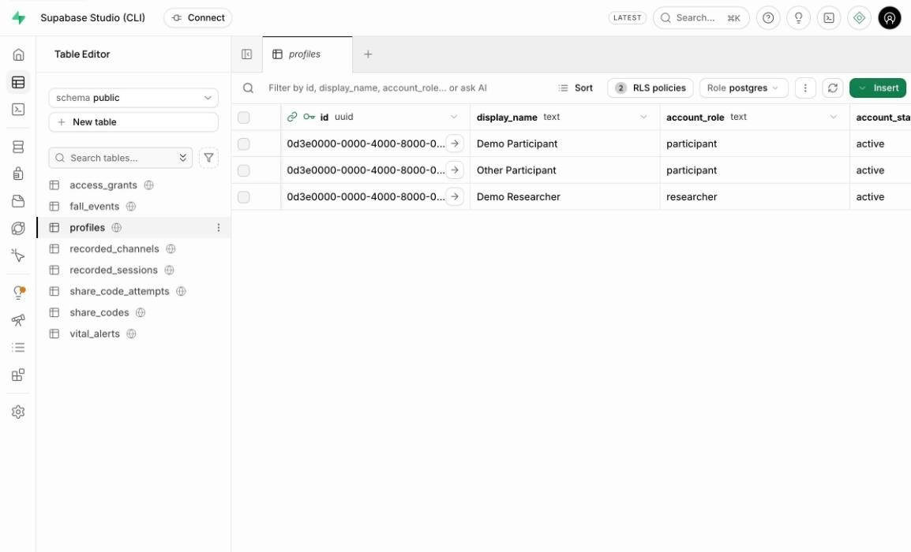
Handover release v1.0.0 · app 0.1.0 · firmware 0.9.6 October 2026 · WearWise Project Team Zakiul Atheef · Hari Bethelli · Siri Bethelli · Thevindu Kodagoda Munasinghage
Research prototype. Not a medical device.
Contents
Part 1
Before you start
What you'll build, what you need, and how to type commands.
1What you'll end up with
By the end of this guide, the whole WearWise system will be running on your own computer, with no accounts or services from the original developers:
1
A local backend
The database, logins and file storage, running inside Docker on your computer, filled with safe demo data.
2
The web dashboard
Running in your browser at localhost:5192. You'll sign in as a demo researcher.
3
The phone app
On an Android emulator (a virtual phone on your computer) or a real phone, talking to your local backend.
The WearWise system. In this guide the "Supabase backend" box runs on your computer. A real patch is optional: the app has a built-in simulated patch.
Time needed
About 2–3 hours the first time, mostly waiting for downloads. Later, starting everything takes about 2 minutes.
Disk space
About 25 GB free: Docker images (several GB), Android Studio and an emulator (about 15 GB), and the project (about 2 GB).
Computer
macOS, Windows 10/11 or Linux, with administrator rights, 16 GB of memory recommended, and an internet connection.
2How to use this guide (the terminal)
Most steps are commands you type into a terminal: a window where you type instructions instead of clicking. That's all a terminal is.
Your computer
How to open a terminal
macOS
Press ⌘ Space, type Terminal and press Enter.
Windows
Click Start, type Terminal (or PowerShell) and press Enter.
Linux
Press Ctrl Alt T.
In this guide, commands look like this. Type the text after the $ (not the $ itself) and press Enter. Copying and pasting is fine.
Terminal: what you type, and what you should see
$ node --version
v24.19.0
Wait until the command finishes and the cursor comes back before typing the next one.
Some commands keep running (the dashboard and the app's bundler). Leave that window open, and open a new terminal window for the next command.
To stop a running command, click its window and press Ctrl C.
Text in angle brackets is something you replace, for example <repository-url>.
cd means "change directory" (go into a folder). Most commands must be run from the wearwise folder that you create in section 10.
Screenshots and output
The terminal output in this guide was captured on a real setup. Keys and private network addresses are hidden or replaced with examples, so your numbers will differ.
3What you need
A computer as described in section 1.
Access to the WearWise code repository, for example an invitation to the project's GitHub repository.
Google Chrome or Microsoft Edge. Patch setup needs one of them.
Optional: an Android phone with a USB cable, to use a real patch over Bluetooth.
Optional: the patch hardware: an ESP32 board and sensors (Part 5). Without a phone or patch, the emulator and the simulated patch drive the whole system.
Part 2
Install the tools
Six free programs, one at a time. After each one, a quick check proves it worked.
4Git (downloads the code)
macOS: in a terminal, run xcode-select --install and click Install, or download it from git-scm.com.
Windows: download the installer from git-scm.com and accept the default options.
Linux (Ubuntu/Debian):sudo apt install git.
Check
$ git --version
git version 2.54.0
5Node.js (runs the dashboard and builds the app)
Go to nodejs.org and download the LTS version (22 or newer). Run the installer with the default options. npm, Node's package installer, comes with it.
Check (open a new terminal first)
$ node --version
v24.19.0
$ npm --version
11.17.0
6Docker Desktop (runs the backend)
Download Docker Desktop from docker.com and install it. On Windows, accept the offer to install or enable WSL 2, and restart if asked.
Open Docker Desktop and accept its terms. Wait until it says Engine running (bottom left).
Docker must be running whenever you use the local backend. You can set it to start when you sign in (Settings → General).
Check (open a new terminal first)
$ docker --version
Docker version 29.8.2, build 7fc2dff
"docker: command not found" on a Mac?
Close the terminal and open a new one. If it still happens, open Docker Desktop → Settings → Advanced and choose to install the command-line tools system-wide.
7Supabase CLI (controls the backend)
The Supabase CLI starts, stops and resets the local backend. Install it as a separate program:
System
How to install
macOS
First install Homebrew (follow the one-line command on brew.sh), then run brew install supabase/tap/supabase
Windows
First install Scoop (follow the commands on scoop.sh in PowerShell), then run scoop bucket add supabase https://github.com/supabase/scoop-bucket.git scoop install supabase
Linux
Download the package for your system from github.com/supabase/cli/releases and install it (for example sudo dpkg -i supabase_*.deb).
Check: 2.120 or newer
$ supabase --version
2.120.0
Don't use "npx supabase"
The WearWise project blocks npm packages from running install scripts, for security, so the npm version of the Supabase CLI can't download its program. Always use the separately installed supabase command.
8Android Studio and Java (builds the phone app)
You need these to build and run the phone app, on an emulator or a real Android phone.
Download Android Studio from developer.android.com/studio and install it. Open it and choose the Standard setup. It downloads the Android SDK and an emulator, which takes a while.
In Android Studio: More Actions → SDK Manager. Under SDK Platforms, tick Android 16 (API 36). Under SDK Tools, make sure Android SDK Build-Tools, Platform-Tools and Emulator are ticked. Click Apply.
More Actions → Virtual Device Manager → + (Create device). Pick a phone such as Pixel 8, then a system image with API 36 (click the download icon next to it), then Finish.
Install Java JDK 17, the version WearWise was tested with. For example, use Eclipse Temurin 17 from adoptium.net (choose version 17 and the installer for your system).
Tell your terminal where Android and Java are (below), then open a new terminal.
macOS: add these lines to the file ~/.zshrc
Run open -e ~/.zshrc (create the file with touch ~/.zshrc if it doesn't exist), paste the lines at the end, save, and open a new terminal.
These are the versions WearWise was tested with. Newer versions are normally fine. Node must be 22 or newer, and the Supabase CLI 2.120 or newer.
Part 3
Get WearWise running
Download the code, start the backend, connect the apps, and open the dashboard.
10Download the code
Pick a place for the project, such as your Documents folder, then download ("clone") it and install its building blocks:
Terminal
$ cd ~/Documents$ git clone <repository-url> wearwise$ cd wearwise$ npm install(the first time it says "added … packages" and takes a few minutes)
up to date, audited 1176 packages in 7s
199 packages are looking for funding
run `npm fund` for details
69 vulnerabilities (16 moderate, 52 high, 1 critical)
…
<repository-url> is the address of the WearWise repository, for example https://github.com/<organisation>/wearwise.git. For a private repository, Git asks you to sign in to GitHub the first time. GitHub Desktop (File → Clone repository) also works if you prefer clicking.
npm install takes a few minutes the first time. On later runs it says up to date.
About the "vulnerabilities" message
npm reports known advisories in the project's development tools (Expo CLI, Metro, Jest). This doesn't stop anything working, and the handover documents record it (docs/knowledge-transfer.md). Don't run npm audit fix --force: it downgrades Expo and breaks the app. Fixing them properly needs an Expo upgrade.
11Start the local backend
Make sure Docker Desktop is running, then, in the wearwise folder:
Terminal
$ supabase start
The first time, this downloads the Supabase images (several GB), which can take 5–20 minutes. Then it creates a fresh database, applies the 11 WearWise migrations (the steps that build the tables and security rules), loads the demo data and uploads the demo recordings. It finishes by printing a summary like this, which you can show again at any time with supabase status:
A website for looking inside the database (section 12).
Mailpit :54324
Catches every email the local backend "sends" (section 15).
Keys
You never need to copy them by hand: section 13 does it for you. The Secret key must never go into an app or a document.
Start again from clean demo data
supabase db reset wipes the local database and rebuilds it from the migrations and demo data. It's handy if you've made a mess while testing. It never touches anything outside your computer.
Terminal
$ supabase db reset
Resetting local database...
Recreating database...
Initialising schema...
Seeding globals from roles.sql...
Applying migration 20260826000001_profiles.sql...
Applying migration 20260826000002_recordings.sql...
… (9 more migrations)
Applying migration 20261017000011_terms_2026_10_17.sql...
Seeding data from supabase/seed.sql...
Seeding data from supabase/seed/demo-recordings.sql...
Restarting containers...
Updating Storage bucket: recordings
Uploading: supabase/seed/recordings/… (9 demo recording files)
Finished supabase db reset on branch main.
12Look inside the database (Studio)
Open http://127.0.0.1:54323 in your browser. This is Supabase Studio, a control panel for your local backend.
Authentication → Users (the padlock icon on the left) lists the three demo accounts.
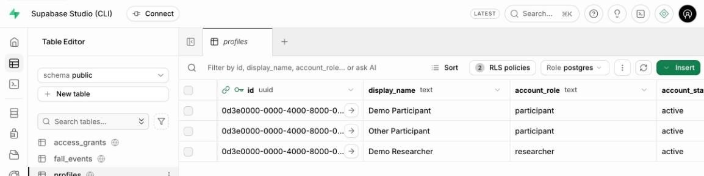
Table Editor → profiles (the table icon on the left). recorded_sessions holds 3 simulated demo sessions.
The demo accounts (local only; every health value is simulated)
Email
Password
What it is
demo.participant@example.invalid
wearwise-demo-only
A participant with simulated recordings, shared with the researcher. Use in the app.
demo.other@example.invalid
wearwise-demo-only
A participant who shares nothing.
demo.researcher@example.invalid
wearwise-demo-only
A researcher. Use on the dashboard.
Creating a researcher account
Researcher and clinician accounts aren't created in the app. In Studio, open the SQL Editor, paste the file supabase/admin/create-viewer.sql, change the three values marked <-- CHANGE (email, role, name), and click Run. The result shows a one-time password: give it to the person privately. To turn an existing account into a researcher, use supabase/admin/set-role.sql the same way.
13Connect the apps to your backend
The dashboard and the app need to know the backend's address and its public key. One command finds both and writes them into each app's settings file:
Terminal (in the wearwise folder)
$ npm run backend:local
> backend:local
> node scripts/use-backend.mjs local
Mobile app (development builds) → http://192.168.1.20:54321
Dashboard (vite dev) → http://127.0.0.1:54321
Restart Metro with a clean cache so the app picks it up: cd apps/mobile && npx expo start -c
A phone must be on the same network as this computer, and the computer's firewall must allow port 54321.
Why two addresses? On a phone, "127.0.0.1" means the phone itself. So the app gets your computer's address on your Wi-Fi network (here 192.168.1.20; yours will differ), and the dashboard, which runs on the computer, uses 127.0.0.1.
Check what each app will use at any time:
Terminal
$ npm run backend:status
Mobile app, development builds: http://192.168.1.20:54321 (from apps/mobile/.env.development.local)
Mobile app, release builds: https://<your-project>.supabase.co (from apps/mobile/.env.production)
Dashboard, vite dev: http://127.0.0.1:54321 (from apps/dashboard/.env.development.local)
Dashboard, production build: https://<your-project>.supabase.co (from apps/dashboard/.env)
If you use…
Then
The Android emulator
The default usually works. If the app can't reach the backend, run npm run backend:local -- --host 10.0.2.2 (the emulator's name for your computer).
A real phone
Phone and computer on the same Wi-Fi (not a guest network). When your computer asks whether to allow incoming connections (macOS) or shows a Windows Defender Firewall prompt, click Allow (on Windows, for Private networks).
A different Wi-Fi network later
Your computer's address changes. Run npm run backend:local again and restart the app's bundler with -c (section 16).
These settings files (.env.development.local) are only used by development builds, so they can never leak into a release build. They're also excluded from Git. npm run backend:cloud switches back to the hosted backend (section 25).
14Start the web dashboard
Open a new terminal window (the dashboard keeps running in it), go to the wearwise folder and start it:
Terminal 2: leave it running
$ cd ~/Documents/wearwise$ npm run dev -w dashboard
> dashboard@0.1.0 dev
> vite
VITE v8.3.4 ready in 107 ms
➜ Local: http://localhost:5192/
➜ Network: use --host to expose
Open http://localhost:5192 in Chrome or Edge.
Sign in as demo.researcher@example.invalid with the password wearwise-demo-only.
Participants lists Demo Participant. Click it to see the simulated sessions, charts, a high-heart-rate alert and a possible fall, and to download CSV files.
The WearWise User Guide explains every dashboard screen.
To stop the dashboard, press Ctrl C in its window.
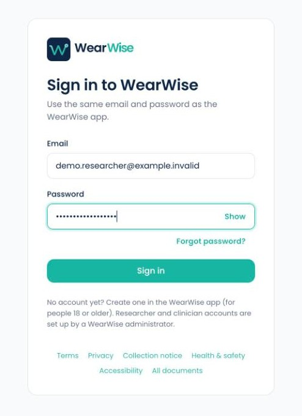
The dashboard sign-in page, served from your computer.
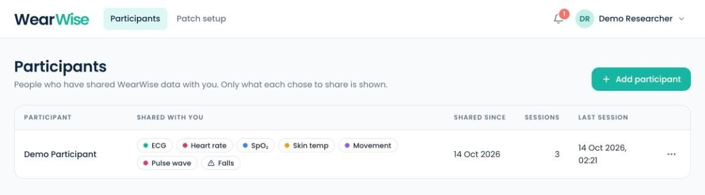
Signed in as the demo researcher. If you see this, the backend and the dashboard both work.
15Emails on your computer (Mailpit)
The local backend doesn't send real emails. Every email, such as password resets and sign-up confirmations, lands in Mailpit at http://127.0.0.1:54324. Try it:
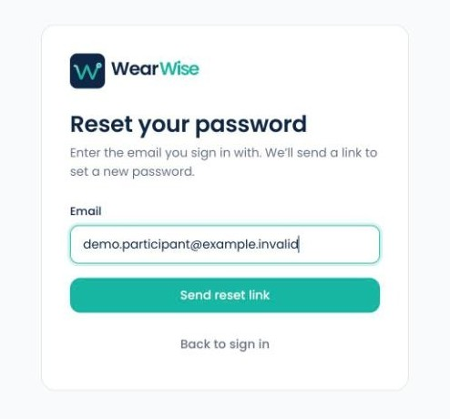
1. Dashboard → Forgot password? → enter a demo email → Send reset link.
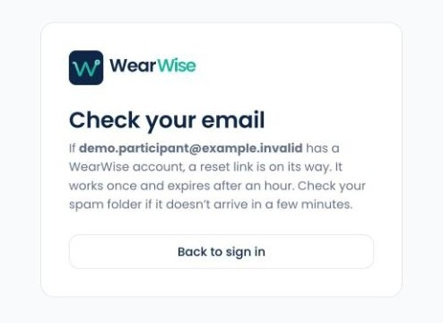
2. The dashboard confirms. Nothing has left your computer.
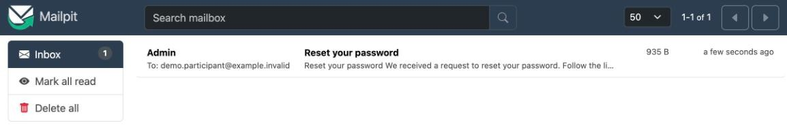
3. Mailpit shows the email. Click it to read it and use its link.
Locally, sign-up email confirmation is switched off, so new app accounts are signed straight in.
Part 4
Run the phone app
Build the app onto an Android emulator or a real phone, then try the whole system.
16On the Android emulator
In Android Studio, open Virtual Device Manager and click ▶ next to your virtual phone. Wait until its home screen appears.
Open a new terminal window and build the app:
Terminal 3: leave it running
$ cd ~/Documents/wearwise/apps/mobile$ npx expo run:android… builds the app (5–15 minutes the first time), installs it on the emulator and opens it …
WearWise opens on the sign-in screen, with no "backend not configured" message. Sign in as demo.participant@example.invalid / wearwise-demo-only. The demo recordings are restored into History.
The terminal keeps running Metro, the "bundler" that sends the app its code. Leave it open while you use the app.
Next time
You only rebuild after changing native settings or updating packages. Normally, start the emulator, open the WearWise app on it, and start just Metro:
Terminal 3
$ npx expo start -c
Starting project at …/wearwise/apps/mobile
Starting Metro Bundler
warning: Bundler cache is empty, rebuilding (this may take a minute)
Waiting on http://localhost:8081
Logs for your project will appear below.
Android Bundled 3709ms node_modules/expo-router/entry.js (2346 modules)
-c clears Metro's cache. Always use it after backend:local or backend:cloud, because the backend address is built into the bundle. In the Metro window, press r to reload the app.
The app's first screen.
Expo Go won't work
WearWise uses its own native code (Bluetooth, encrypted storage), so it always runs as its own "development build" made by npx expo run:android. The Expo Go app from the Play Store can't open it.
17On a real Android phone
A real phone is needed to use a real patch, because emulators have no Bluetooth.
Turn on Developer options: on the phone, open Settings → About phone (on Samsung: About phone → Software information) and tap Build number 7 times.
Turn on USB debugging: Settings → Developer options → USB debugging on.
Connect the phone with a USB cable. On the phone, tap Allow when it asks to allow USB debugging from this computer.
Check the computer can see it:
Terminal
$ adb devices
List of devices attached
R3C…(your phone's serial) device
emulator-5554 device
Put the phone on the same Wi-Fi as the computer, then build and install:
Terminal (apps/mobile)
$ npx expo run:android --device… choose your phone from the list …
If the list says unauthorized, unlock the phone and accept the USB debugging prompt.
Phone not on the same Wi-Fi?
With the phone on USB you can route the backend through the cable: run adb reverse tcp:54321 tcp:54321, then npm run backend:local -- --host 127.0.0.1, then restart Metro with npx expo start -c.
Every development build follows this computer
Any phone that once ran a development build from this computer loads its code from Metro here (port 8081). Switching backend:local / backend:cloud and restarting Metro switches all of them.
18On an iPhone (Mac only)
You need a Mac with Xcode (App Store) and CocoaPods (brew install cocoapods). Then, in apps/mobile:
Terminal (apps/mobile)
$ npx expo run:ios# the iOS simulator$ npx expo run:ios --device# a connected iPhone
A real iPhone also needs your Apple developer team chosen in Xcode. See docs/deployment.md (section iOS: macOS with Xcode). The iOS app has had less real-device testing than Android.
19Try the whole system
This walk-through uses every part: a new participant records with the simulated patch and shares with the demo researcher.
Create a test participant: in the app, sign out if needed, tap Create Account, and use any address (for example you+test1@example.com), a password of 10+ characters, and tick the three boxes. You're signed straight in.
Connect the simulated patch:Devices → Use Simulation. Home starts showing live readings. About 12 seconds later a practice possible fall alarm appears: tap I'm OK.
Record: on Home, under Record, tap Start recording, wait a minute, then Stop recording → Stop. It appears in History and is backed up within a minute.
Check the backend: in Studio, Table Editor → recorded_sessions now has your session.
Share:Profile → Privacy & access → Share my data → Create code. Note the code.
Add the participant on the dashboard: signed in as the demo researcher, click + Add participant and type the code. Your test participant appears. Open it to see the session.
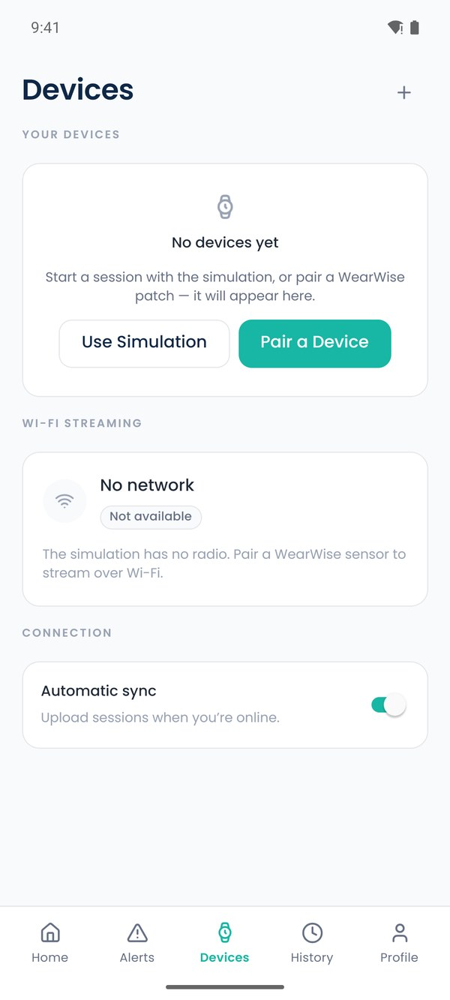
Devices → Use Simulation.Live readings.
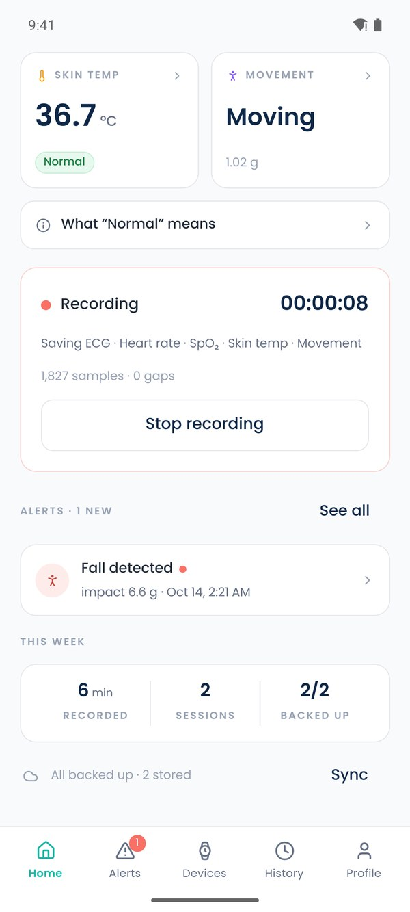
Recording.
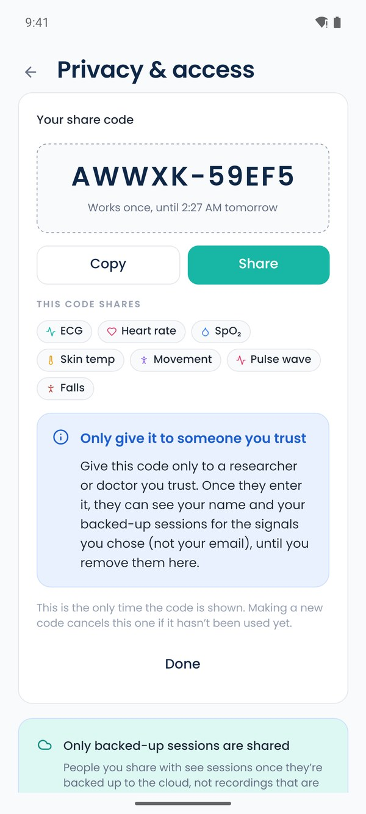
The share code.
Offline test (optional)
Turn on airplane mode, or run supabase stop, and record a session: it records normally and waits as "not backed up". Turn the network back on (or supabase start) and bring the app to the front: it uploads within a minute. Profile → Privacy & access shows the backup status and has Back up now.
Part 5
The WearWise patch
Wire the sensors, install the firmware from the dashboard, and pair the patch with a phone.
20Parts and wiring
Part
Measures
Connects with
ESP32 dev board
Controller, Bluetooth, Wi-Fi
Classic ESP32 (ESP-WROOM-32, not S2/S3/C3), 4 MB flash, USB (CP210x or CH340 chip)
MAX30102
Heart rate, SpO₂, pulse wave
I²C (SDA/SCL)
MAX30205
Skin temperature
I²C (SDA/SCL)
MMA8452Q
Movement, possible falls
I²C (SDA/SCL); INT1 reserved
AD8232 + electrodes
ECG (single lead, education only)
Analog output plus two lead-off pins
Any subset of the sensors works: the patch reports only what it finds when it starts.
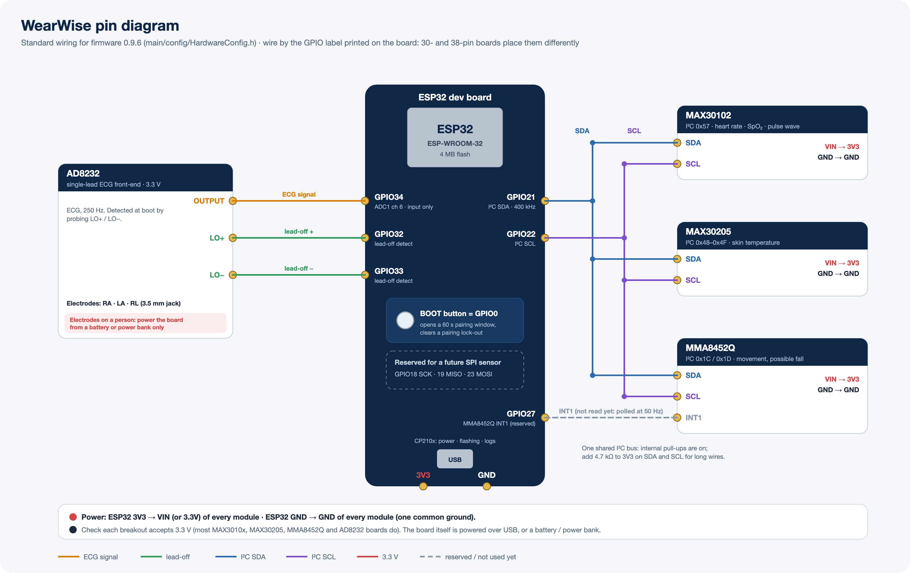
Wiring. Every module runs on 3.3 V from the board's 3V3 pin, with all grounds connected. The three I²C modules share SDA (GPIO21) and SCL (GPIO22). Full table: docs/hardware.md.
Signal
ESP32 pin
Notes
I²C SDA / SCL
GPIO21 / GPIO22
MAX30102, MAX30205 and MMA8452Q. Add 4.7 kΩ pull-ups for long wires.
AD8232 OUTPUT
GPIO34
ECG input, sampled at 250 Hz.
AD8232 LO+ / LO−
GPIO32 / GPIO33
Lead-off detection; also how the patch finds the AD8232 at start-up.
MMA8452Q INT1
GPIO27
Reserved for future use.
BOOT button
GPIO0
On the board. Opens a 60-second pairing window and clears a pairing lock-out.
Safety: ECG electrodes
Whenever ECG electrodes are on a person, power the board from a battery or USB power bank only, never from a mains-powered computer, charger or bench supply. The AD8232 module isn't isolated. WearWise is a research prototype, not a medical device.
21Install the firmware (Patch setup)
The easiest way needs no programming tools: the dashboard's Patch setup page installs the bundled firmware (0.9.6) over USB and gives the patch its Bluetooth PIN. It works in Chrome or Edge on a computer, signed in as a researcher or clinician. Nothing about the patch is sent to the backend.
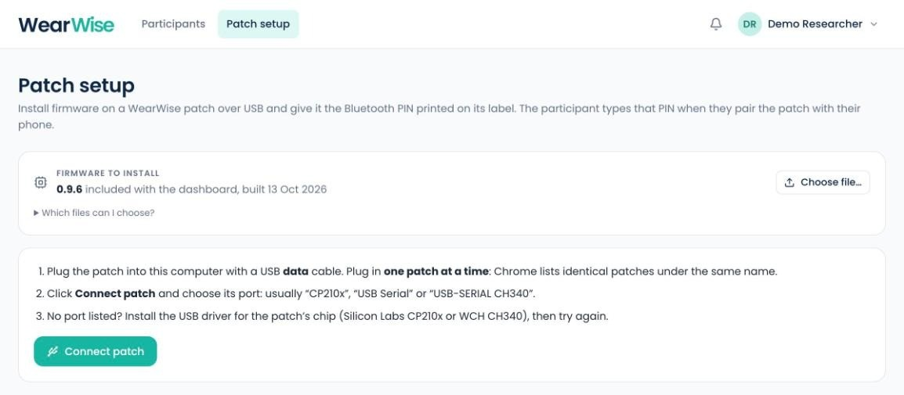
Patch setup in the dashboard's top bar.
Plug the patch into the computer with a USB data cable (some cables only charge). Plug in one patch at a time.
Click Connect patch and choose its port in Chrome's list: usually CP210x, USB Serial or USB-SERIAL CH340. No port listed? Install the USB driver for the board's chip (Silicon Labs CP210x or WCH CH340) and try again.
The page shows the patch's Bluetooth name (WearWise-XXXX), its firmware version and whether it has a label PIN. Choose:
Set up
For a new patch: installs the firmware, writes a new random PIN and erases the patch's settings (paired phones and Wi-Fi).
Update
New firmware, keeps the PIN, paired phones and Wi-Fi.
New PIN
For a new participant: a new PIN and erased settings, firmware unchanged.
Erase everything
Press and hold for 2 seconds. Wipes the whole patch. Set up can follow straight away.
Print the PIN on a label and stick it on the patch. The participant types it when pairing.
"The patch didn't answer"?
Hold BOOT, tap EN/RST, release BOOT, and connect again. If it still fails, unplug the patch and plug it back in. Technical details under the card shows the full log.
Developers can also build and flash the firmware from source with ESP-IDF 5.4.2. See section 23.
22Pair the patch with a phone
Power the patch (USB power bank or battery) and keep it near the phone.
In the app: Devices → Pair a Device. Allow Nearby devices / Bluetooth if asked.
Tap CONNECT next to the patch's name (on its label).
Type the 6-digit label PIN when the phone asks. Ignore Android's "0000 or 1234" hint.
Home starts showing the signals the patch has. Sensors it lacks say so.
Pairing rules (enforced by the patch)
A patch accepts a new phone only when it has never been paired, or within 60 s of pressing BOOT.
3 failed attempts lock pairing until BOOT is pressed or a pairing succeeds.
It remembers two phones. A third replaces the oldest (press BOOT first). One phone is connected at a time.
Refused? In the phone's Bluetooth settings, remove the old WearWise entry, press BOOT, and pair again.
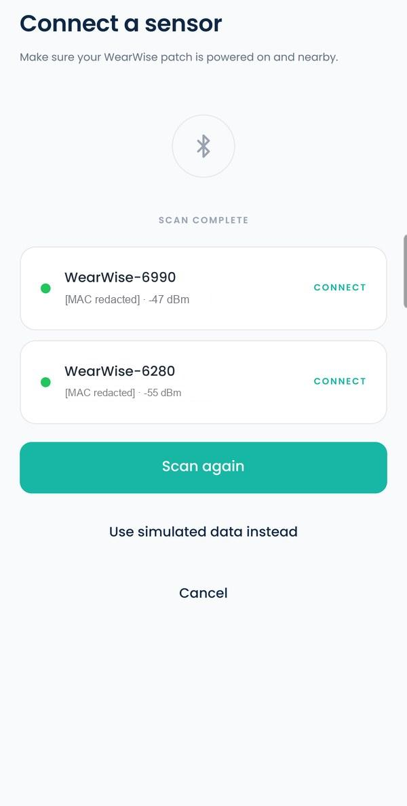
Two patches found by a real phone.
23Optional: build the firmware from source
Only needed to change the firmware. Install ESP-IDF v5.4.2 (Espressif's toolkit) as described in docs/firmware.md, then:
Terminal (ESP-IDF environment)
$ cd firmware/wearwise-esp32$ idf.py set-target esp32$ idf.py build$ idf.py -p <PORT> flash monitor# e.g. /dev/cu.usbserial-0001 or COM5; Ctrl ] quits the monitor
The serial log at start-up lists every sensor found. A board flashed this way that was never set up on the Patch setup page makes up its own PIN and prints it on this log.
Part 6
Everyday use and next steps
Starting and stopping, moving to a hosted backend, tests, and fixes for common problems.
24Daily start and stop
Start working
Open Docker Desktop.
Terminal 1, in wearwise: supabase start
Terminal 2, in wearwise: npm run dev -w dashboard
Start the emulator (or plug in the phone).
Terminal 3, in wearwise/apps/mobile: npx expo start -c, then open WearWise on the device.
Stop working
Press Ctrl C in terminals 2 and 3.
Terminal 1: supabase stop. Your local data is kept.
supabase stop --no-backup also deletes the local data.
Quit Docker Desktop if you like.
Command (in wearwise)
What it does
supabase status
Is the backend running, and its addresses.
supabase db reset
Rebuild the local database with fresh demo data.
npm run backend:status
Which backend each app uses.
npm run backend:local / backend:cloud
Switch the apps between your local backend and the hosted one. Then restart Metro with -c.
git pull then npm install
Get the latest code from the repository.
25Moving to a hosted backend
The local backend is for development and testing. For a real study, the organisation runs WearWise on its own Supabase Cloud project, or on a self-hosted Supabase over HTTPS. The same code works with each, chosen only by configuration. In outline:
Create a Supabase project under the organisation's account.
supabase login, supabase link --project-ref <ref>, then supabase db push to apply the same migrations. Never load the demo data into it.
Set Auth, email (SMTP) and Realtime settings in its dashboard.
Put its URL and publishable key in apps/mobile/.env, apps/mobile/.env.production and apps/dashboard/.env, then run npm run backend:cloud and restart Metro.
Release builds accept only https:// addresses. The full steps, including release builds of the app and hosting the dashboard, are in docs/deployment.md.
Keep secrets out of the apps and the repository
The apps need only the project URL and its publishable key. Service keys, database passwords, access tokens and signing keys stay with their owner and are never committed. See docs/security.md.
26Running the tests
What
Command (in wearwise)
Phone app: types and unit tests
npm run typecheck -w mobile then npm test -w mobile
Dashboard: types and unit tests
npm run typecheck -w dashboard then npm test -w dashboard
Database security rules (resets the local database)
bash supabase/sql-tests/run-on-local-stack.sh
Database: pgTAP tests only
supabase test db
Hardware test procedures
See docs/testing/hardware-test-matrix.md
27Troubleshooting
Problem
Fix
supabase start: "Cannot connect to the Docker daemon"
Docker isn't running. Open Docker Desktop and wait for Engine running.
supabase start: "port is already allocated"
Something else uses ports 54321–54327, often another Supabase project. Stop it (supabase stop --project-id <other>) or quit the other program.
"command not found" for git, node, docker, supabase or adb
Open a new terminal. If it persists, reinstall that tool or check the PATH settings in section 8.
The app says the backend isn't configured
npm run backend:local, then restart Metro with npx expo start -c and reload the app.
The app can't reach http://192.168.x.x:54321
Same Wi-Fi (not a guest network)? Firewall allows port 54321? Did the computer's address change? Run npm run backend:local again and restart Metro with -c. On the emulator, try --host 10.0.2.2.
Changed the backend but the app still uses the old one
The address is bundled in: npx expo start -c, then reload.
"Invalid login credentials" with a demo account
The database was reset without the demo data, or the app is on another backend: supabase db reset; npm run backend:status.
npx expo run:android fails to find the SDK or Java
Check ANDROID_HOME and JAVA_HOME (JDK 17) from section 8, in a new terminal.
adb devices lists nothing, or unauthorized
Try another cable or USB port, turn USB debugging off and on, and accept the prompt on the phone.
Dashboard: "Not configured" page
npm run backend:local, then restart npm run dev -w dashboard.
Can't see Participants or Patch setup
You're signed in as a participant. Use a researcher account (section 12).
Share code "invalid or expired"
Codes work once, last 24 hours, and a newer code replaces an unused one. Make a new code.
Patch setup: no port in Chrome's list
Install the CP210x or CH340 driver, use a data cable, use Chrome or Edge.
Pairing refused
Remove the old WearWise entry in the phone's Bluetooth settings, press BOOT, pair again within 60 s with the label PIN.
A possible-fall alarm keeps appearing with the simulation
On purpose: about 12 s after connecting and after a recording starts or stops, then every 3 minutes. Tap I'm OK.
A phone you didn't mean to test with now uses the local backend
It's a development build following this computer's Metro. Run npm run backend:cloud and restart Metro with -c.
Many more cases are in docs/troubleshooting.md.
28Glossary
Repository (repo)
The project's folder of code, with its history, stored in Git.
Terminal / command line
A window for typing commands (section 2).
Docker / container
Software that runs other programs (here, the Supabase backend) in self-contained boxes.
Supabase
The backend platform WearWise uses: a Postgres database, logins, file storage and live messaging.
Migration
A file that creates or changes database tables and security rules. Applied in order.
Seed / demo data
Made-up accounts and simulated recordings, loaded into the local database only.
Row Level Security (RLS)
Database rules that decide who can read or change each row. WearWise's privacy is enforced here.
Publishable key / secret key
Supabase keys. The publishable key is safe inside apps. The secret key must stay private.
Metro
The bundler that sends the app its JavaScript code while you develop.
Development build
A test version of the app that loads its code from Metro on your computer.
Emulator
A virtual Android phone running on your computer. No Bluetooth.
LAN IP address
Your computer's address on your Wi-Fi network, such as 192.168.1.20.
Port
A numbered "door" on a computer: 54321 (backend API), 54323 (Studio), 54324 (Mailpit), 5192 (dashboard), 8081 (Metro).
Firmware
The program that runs on the patch's ESP32 board.
Where to go next
The WearWise User Guide explains every screen of the app and the dashboard. In the repository, README.md is the technical quick start and docs/knowledge-transfer.md is the full handover guide (architecture, database, security, deployment).
Made by the WearWise Project Team
Zakiul Atheef
Project Lead, Scrum Master, Technical Lead, Security Engineering Lead and Integration Lead
Hari Bethelli
Cloud & Data Engineer
Siri Bethelli
UI/UX & Data Visualisation Engineer
Thevindu Kodagoda Munasinghage
Security Engineer, Documentation Lead and QA & Testing Lead
WearWise Setup Guide · handover release v1.0.0, October 2026. WearWise is a research prototype and not a medical device. Security practices are informed by relevant guidance; nothing about WearWise is certified.